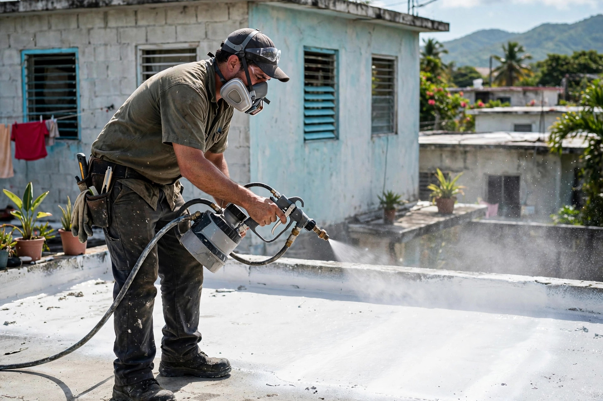
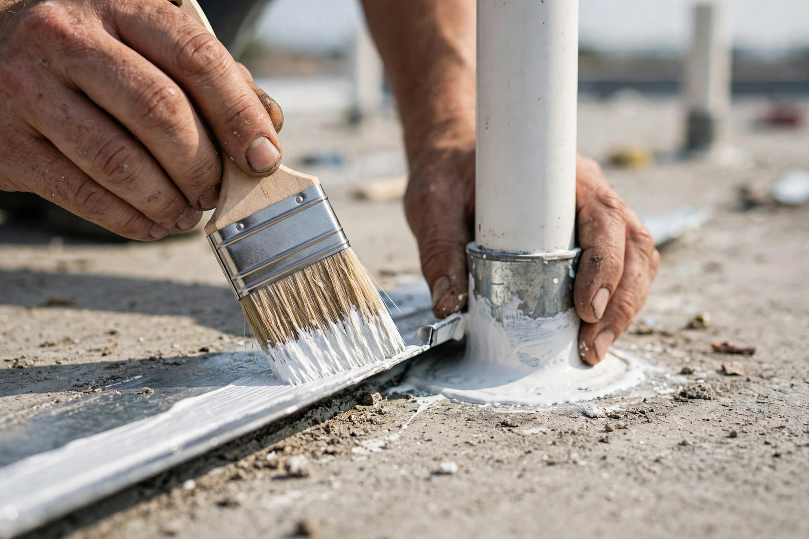
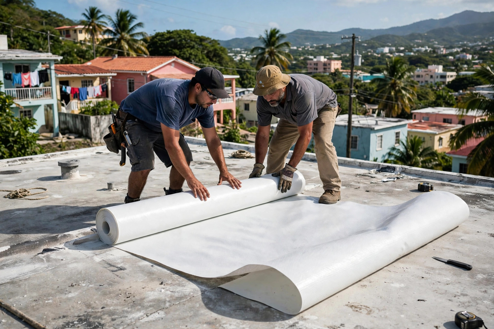

Primero diagnosticamos, después sellamos. Sellado residencial y comercial con criterio de consultor, no de vendedor.
Inspección seria, preparación completa y aplicación profesional.



Cada techo se evalúa primero: el diagnóstico manda.
Evaluamos tu techo como consultores: diagnóstico honesto antes de venderte nada.
Sistemas elastoméricos y membranas para casas, con garantía de aplicación correcta.
Techos comerciales e institucionales: áreas grandes con planificación seria.
Revisiones periódicas para que el sellado dure sus años completos.
Escríbenos por WhatsApp al 787-703-5479: estimado sin costo ni compromiso.
Registrados desde 2011. No somos vendedores con rolo: somos consultores del techo.
Escríbenos por WhatsApp o llama al 787-703-5479.
Visitamos y evaluamos el techo como consultores.
Te decimos lo que necesita, lo que no, y cuánto cuesta.
Preparación completa y aplicación profesional del sistema.
Que primero diagnosticamos tu techo con honestidad: te decimos lo que necesita y lo que no. No vendemos un sellado que no hace falta.
Sí, si está bien adherido. Si está levantado, cuarteado o con burbujas, lo removemos primero para que el sistema nuevo pegue como debe.
Cada 4 a 5 años en promedio. El sol del centro de la isla castiga fuerte: una inspección a tiempo alarga la vida del techo.
Sí. Si tu techo está filtrando, escríbenos por WhatsApp al 787-703-5479 con fotos y coordinamos la visita.
Por WhatsApp al 787-703-5479 o llamando directo. El estimado es gratis y sin compromiso.
Gratis y sin compromiso. Mándanos fotos del techo por WhatsApp.
787-703-5479Esta página es una muestra de lo que hacemos en Manupro. Llevamos tu negocio a internet con oferta de lanzamiento por tiempo limitado.